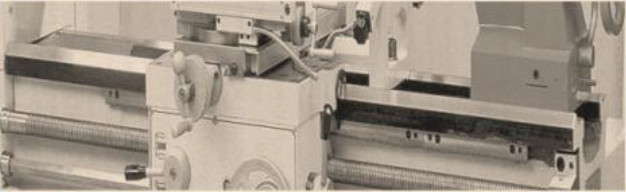

3. Alas Mesin
Activity
Alas mesin adalah bagian dari mesin bubut yang berfungsi sebagai pendukung eretan (support) dan kepala lepas, serta sebagai lintasan eretan dan kepala lepas. Alas mesin ini memiliki permukaan yang rata dan halus. Hal ini dimaksudkan untuk mendukung kesempurnaan pekerjaan membubut (kelurusan).

https://lh3.googleusercontent.com/-c1B3WVLuVTw/URTMG5Abv-I/AAAAAAAABTg/oVJlOBcwwMA/s482/2.PNG
Gambar 15 Alas Mesin